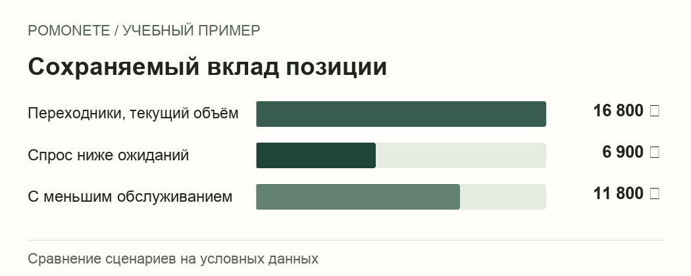

Вывести SKU из ассортимента Яндекс Маркета. Как проверить устранимые расходы
Считаем вклад уходящего товара с поправкой на расходы, которые исчезнут вместе с продажами.
Селлер Яндекс Маркета пересматривает редкие переходники. Отчёт по распределению расходов показывает убыток, но после удаления товара склад и офис продолжат работать. Для решения по выводу расход надо проверять по тому, исчезнет ли он вместе с продажами и когда это произойдёт.
Как отделить вынужденные затраты
Перечислите операции и сумму на одну продажу, затем запишите расходы, которые возникают только ради этой позиции. Проверьте договоры и обязанности сотрудников. Уточните момент, когда этот расход можно остановить. Распределённая доля аренды останется в справочной строке, пока не освободится реальная площадь.
Чтобы пересобрать расчёт «Сохраняемый вклад позиции» для своего магазина, перенесите в него исходные числа. В формуле A обозначает «выручка позиции, ₽», B обозначает «прямые затраты, ₽», C обозначает «устранимые расходы ассортимента, ₽». Две вычитаемые суммы хранят отдельно, чтобы можно было проследить происхождение изменения и избежать двойного вычета. Запишите рядом период и охват каждого среза. Если для одной строки известна только оценка, оставьте пояснение непосредственно рядом с ней: по итоговой цифре источник уже не восстановить.
Сохраняемый вклад позиции = A − B − C
| Условие | Выручка позиции, ₽ | Прямые затраты, ₽ | Устранимые расходы ассортимента, ₽ | Сохраняемый вклад позиции |
|---|---|---|---|---|
| Переходники, текущий объём | 117 000 | 89 800 | 10 400 | 16 800 ₽ |
| Спрос ниже ожиданий | 91 300 | 74 000 | 10 400 | 6 900 ₽ |
| С меньшим обслуживанием | 94 200 | 75 800 | 6 600 | 11 800 ₽ |

В сценарии «Переходники, текущий объём» в формулу подставляем выручка позиции, ₽ = 117 000, прямые затраты, ₽ = 89 800, устранимые расходы ассортимента, ₽ = 10 400. Получается 16 800 ₽. Выделены операции, которые реально прекратятся при выводе артикула.
В сценарии «Спрос ниже ожиданий» в формулу подставляем выручка позиции, ₽ = 91 300, прямые затраты, ₽ = 74 000, устранимые расходы ассортимента, ₽ = 10 400. Получается 6 900 ₽. Постоянные расходы общей команды не включены, пока они не меняются.
В сценарии «С меньшим обслуживанием» в формулу подставляем выручка позиции, ₽ = 94 200, прямые затраты, ₽ = 75 800, устранимые расходы ассортимента, ₽ = 6 600. Получается 11 800 ₽. Требования к упаковке и обработке не меняются, сокращён один отдельный процесс.
Если «Переходники, текущий объём» взять за исходную точку, «Спрос ниже ожиданий» меняет показатель «сохраняемый вклад позиции» на -9 900 ₽, а «С меньшим обслуживанием» на -5 000 ₽. Между двумя последними строками разница составляет 4 900 ₽ при вычитании второй из третьей. Смотрите, какой именно вход изменился между строками. Если менялись объём и условия одновременно, итог сравнения относится ко всему сочетанию.
Запишите отдельно результат по обычным условиям «Переходники, текущий объём» (16 800 ₽) и результат по уточнённым условиям «С меньшим обслуживанием» (11 800 ₽). Если обе оценки получились по одному правилу, следующий вопрос касается исходных данных. Проверьте, сохраняется ли направление сравнения, если вернуть одно нестабильное условие к исходному. Сценарии полезно привязывать к операционному событию, по которому можно проверить, что новый режим действительно произошёл.
Что может потерять соседний товар
Переходник иногда продаётся вместе с дорогой системой. После вывода он может уменьшить число покупок всей группы, даже если даёт небольшой собственный вклад. Проверьте связки заказов и доступность замен, затем посчитайте вариант с частичным сохранением предложения.
Проверьте переход от первичной записи до показателя «сохраняемый вклад позиции». Колонки «выручка позиции, ₽, прямые затраты, ₽, устранимые расходы ассортимента, ₽» могут поступить разными путями. Пройдите пример, где дата и сумма видны в исходнике, до последней строки. Для этого подойдут экономика заказов и собственная закупочная ведомость. Затем возьмите один случай с исключением и убедитесь, что результат можно восстановить по сохранённому правилу.
Выгрузка маркетплейса даёт начисления по операциям. Собственную стоимость закупки, труд и расходники подставляют из учёта магазина с датой действия. Для решения по ассортименту разделите повторяющиеся переменные расходы, затраты на запуск и текущие фиксированные расходы команды. После изменения предложения обновляются и продажи соседних изделий. Счёт по одному товару имеет смысл дополнить итогом той группы, между вариантами которой может переключиться покупатель.
Что сильнее всего меняет результат
Продолжим на базе «Спрос ниже ожиданий» (6 900 ₽). Разложим расчёт на отдельные входы: «выручка позиции, ₽», «прямые затраты, ₽», «устранимые расходы ассортимента, ₽». Для удобства каждый опыт меняет одну величину примерно на десятую часть. Во всех остальных полях оставляем исходные числа. Для проверки более длинного периода шаги можно подобрать по фактическим колебаниям из истории.
- «Выручка позиции, ₽» меняется с 91 300 на 100 430. При прежних остальных входах получается 16 030 ₽, сдвиг составляет 9 130 ₽.
- «Прямые затраты, ₽» меняется с 74 000 на 81 400. При прежних остальных входах получается -500 ₽, сдвиг составляет -7 400 ₽.
- «Устранимые расходы ассортимента, ₽» меняется с 10 400 на 11 440. При прежних остальных входах получается 5 860 ₽, сдвиг составляет -1 040 ₽.
Отметьте в рабочей таблице, что «выручка позиции, ₽» показал сдвиг 9 130 ₽. Переведите эту величину в цену решения: проверьте, достаточно ли её для смены выбранного режима. Если решение остаётся тем же, ограничьтесь контролем на очередной дате. При перевороте вывода запросите уточнение исходного значения и повторите опыт.
Держите маленькую ведомость обязательств после отмены позиции: упаковка на складе, аванс поставщику, поддержка гарантий. Эти обязательства могут сохраняться после последней продажи. Их учёт меняет первый месяц, а длительную экономику удобнее смотреть отдельно.
Как провести тест вывода
Выберите ограниченное окно с наблюдаемыми сопоставимыми товарами. Зафиксируйте изменение частоты покупок и освободившееся рабочее время. Если решение постоянно, приложите результаты распродажи остатка и расходы, которые действительно прекратились.
Поставьте рядом плановую и фактическую строки сделки с сохранённой себестоимостью. Проверку удобнее начинать с позиций, на которые приходится основной вклад, потом выделять случаи с нестандартной логистикой, возвратом или разовой скидкой. Если после смены состава продаж средняя величина улучшилась, восстановите исходные веса и оцените, сколько прироста действительно получилось на сопоставимых позициях.
При еженедельной сверке поставьте рядом сценарий «С меньшим обслуживанием» и реально наблюдавшееся значение. Если оценка стала систематически расходиться с результатом, назовите источник и предложите измерение меньшего масштаба. Для селлера Яндекс Маркета такой шаг важен, когда тот же показатель собирают разные сотрудники или несколько складов.